SHAP Visualization in R (first post)
Machine Learning
Data Visualization
The original R post on SHAP visualizations for XGBoost, now linked to the later SHAPforxgboost package vignette.
Update, 2019-07-21:
After my R package SHAPforxgboost was released on CRAN, I updated the examples here to use the package functions across two datasets. For the fuller package vignette, see SHAP for XGBoost in R: SHAPforxgboost.
Example 1
This is the example I used in the package SHAPforxgboost
# Example use iris
suppressPackageStartupMessages({
library(SHAPforxgboost)
library(xgboost)
library(data.table)
library(ggplot2)
})
X1 = as.matrix(iris[,-5])
mod1 = xgboost::xgboost(
data = X1, label = iris$Species, gamma = 0, eta = 1,
lambda = 0,nrounds = 1, verbose = F)
# shap.values(model, X_dataset) returns the SHAP
# data matrix and ranked features by mean|SHAP|
shap_values <- shap.values(xgb_model = mod1, X_train = X1)
shap_values$mean_shap_score## Petal.Length Petal.Width Sepal.Length Sepal.Width
## 0.62935975 0.21664035 0.02910357 0.00000000shap_values_iris <- shap_values$shap_score
# shap.prep() returns the long-format SHAP data from either model or
shap_long_iris <- shap.prep(xgb_model = mod1, X_train = X1)
# is the same as: using given shap_contrib
shap_long_iris <- shap.prep(shap_contrib = shap_values_iris, X_train = X1)SHAP summary plot
shap.plot.summary(shap_long_iris)
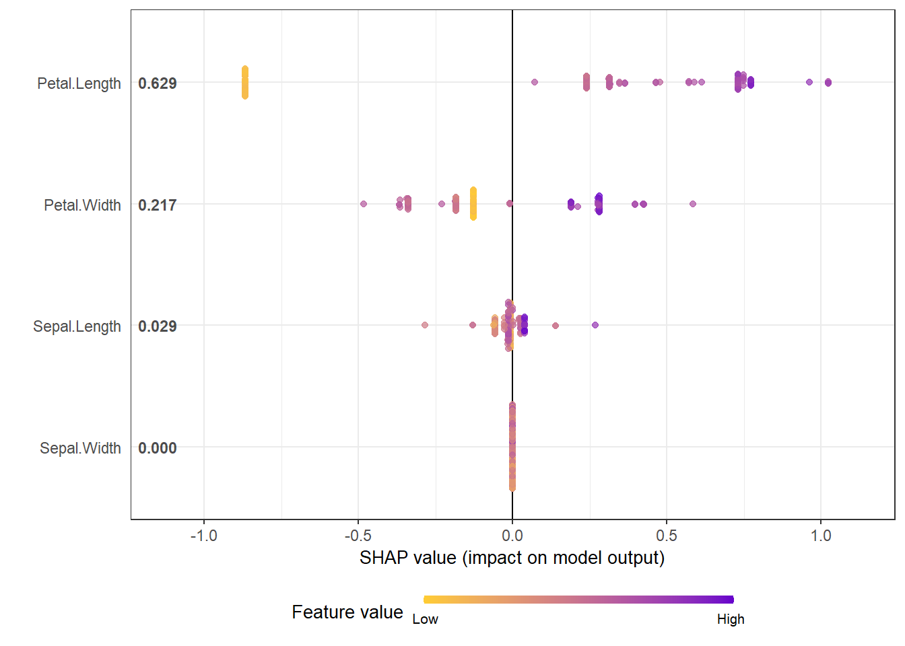
# option of dilute is offered to make plot faster if there are over thousands of observations
# please see documentation for details.
shap.plot.summary(shap_long_iris, x_bound = 1.5, dilute = 10)
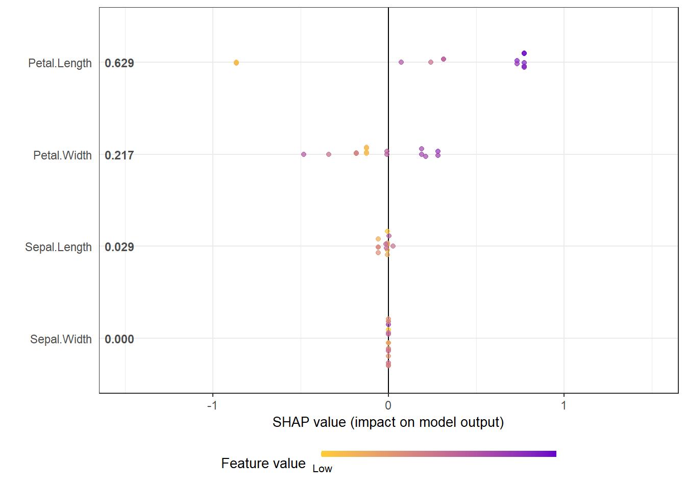
Alternative ways:
# option 1: from the xgboost model
shap.plot.summary.wrap1(mod1, X1, top_n = 3)
# option 2: supply a self-made SHAP values dataset (e.g. sometimes as output from cross-validation)
shap.plot.summary.wrap2(shap_score = shap_values$shap_score, X1, top_n = 3)SHAP dependence plot
shap.plot.dependence(data_long = shap_long_iris, x="Petal.Length",
y = "Petal.Width", color_feature = "Petal.Width")
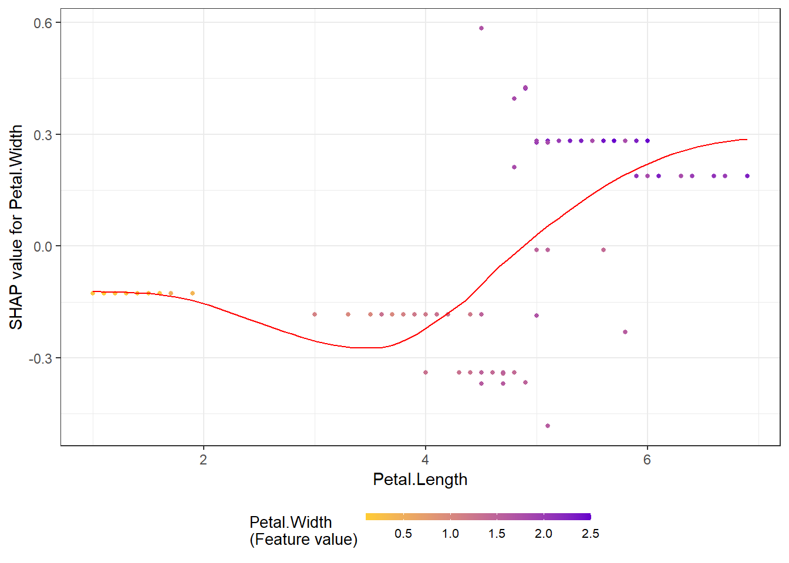
The without color version, just plot SHAP value against feature value:
shap.plot.dependence(data_long = shap_long_iris, "Petal.Length")
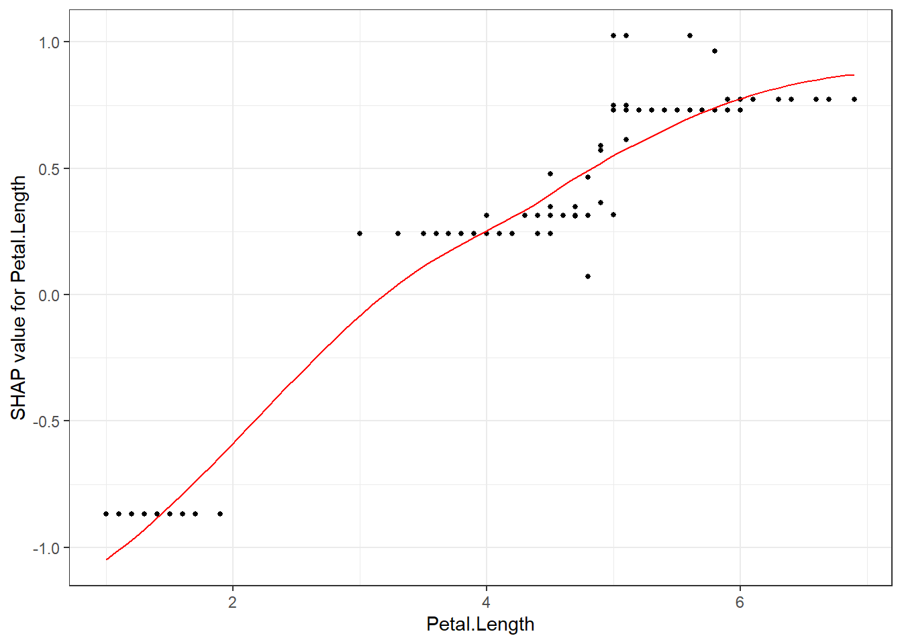
SHAP interaction effect plot
# To get the interaction SHAP dataset for plotting:
# fit the xgboost model
mod1 = xgboost::xgboost(
data = as.matrix(iris[,-5]), label = iris$Species,
gamma = 0, eta = 1, lambda = 0,nrounds = 1, verbose = FALSE)
# Use either:
data_int <- shap.prep.interaction(xgb_mod = mod1,
X_train = as.matrix(iris[,-5]))
# or:
shap_int <- predict(mod1, as.matrix(iris[,-5]),
predinteraction = TRUE)
# **SHAP interaction effect plot **
shap.plot.dependence(data_long = shap_long_iris,
data_int = shap_int_iris,
x="Petal.Length",
y = "Petal.Width",
color_feature = "Petal.Width")
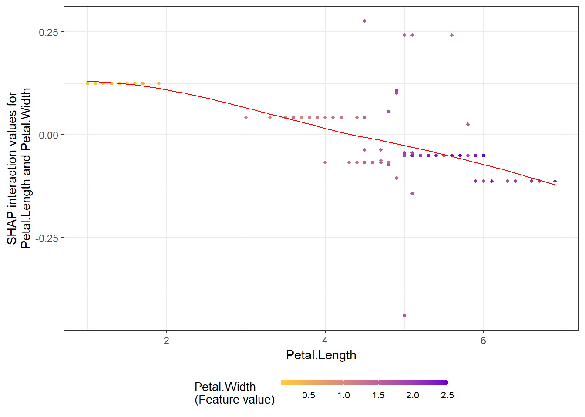
SHAP force plot
# **SHAP force plot**
plot_data <- shap.prep.stack.data(shap_contrib = shap_values_iris,
n_groups = 4)
shap.plot.force_plot(plot_data)
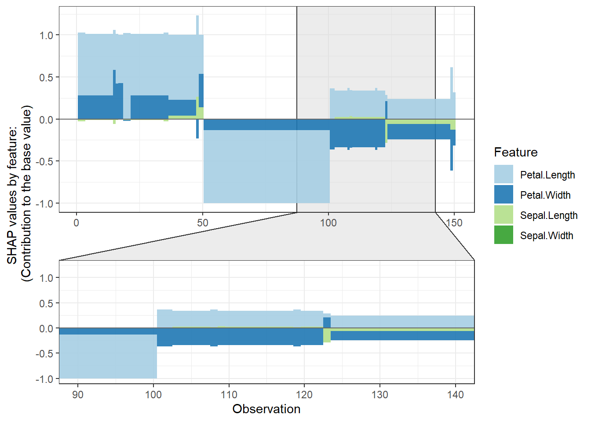
shap.plot.force_plot(plot_data, zoom_in_group = 2)
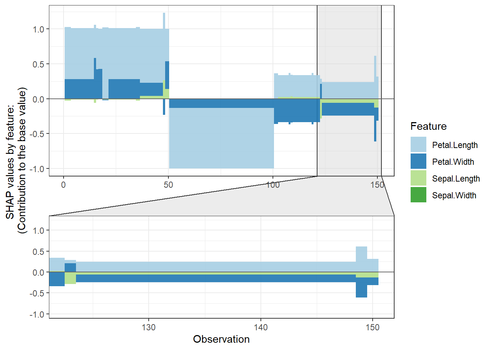
# plot all the clusters:
shap.plot.force_plot_bygroup(plot_data)
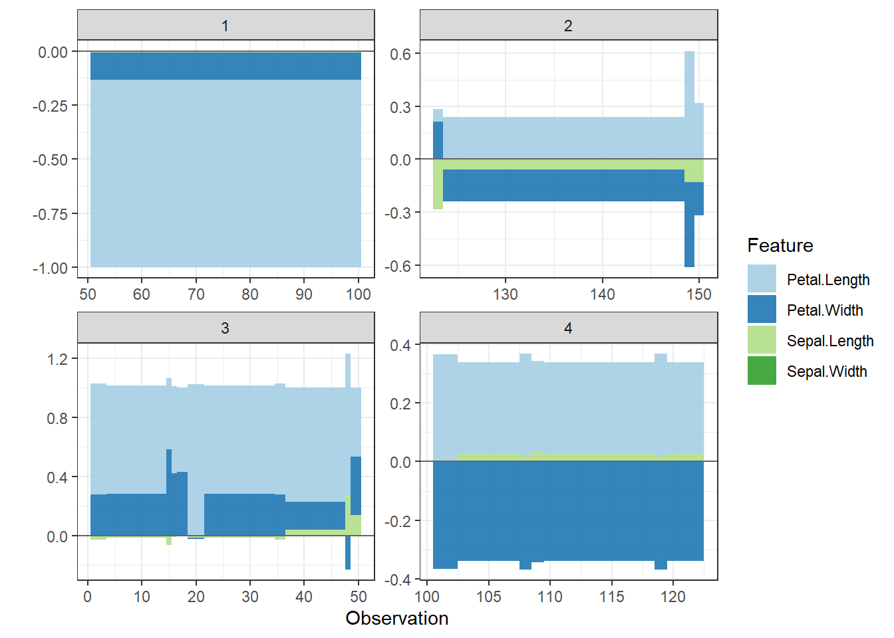
Example 2
This example is based on the slum data I used in the earilier post.
Summary plot
-
Using
geom_sinafromggforceto make the sina plot
-
We can see clearly for the most influential variable on the top: Monthly water cost. A Higher cost is associated with the declined share of temporary housing. But a very low cost has a strong impact on the increased share of temporary housing
- The effects of binary variables are highly distinctive. The second variable shows that Resettled housing is highly unlikely to be temporary, so does being close to wells as water sources.
Load the xgboost model
best_rmse_index <- 56
best_rmse <- 0.2102
best_seednumber <- 3660
best_param <- list(objective = "reg:linear", # For regression
eval_metric = "rmse", # rmse is used for regression
max_depth = 9,
eta = 0.09822, # Learning rate, default: 0.3
subsample = 0.64,
colsample_bytree = 0.6853,
min_child_weight = 6, # These two are important
max_delta_step = 8)
# The best index (min_rmse_index) is the best "nround" in the model
nround <- best_rmse_index
set.seed(best_seednumber)
mod1 <- xgboost::xgboost(data = X_train, label = Y_train, params = best_param, nround = nround, verbose = F)## [23:14:47] WARNING: amalgamation/../src/objective/regression_obj.cu:174: reg:linear is now deprecated in favor of reg:squarederror.shap.plot.summary.wrap1(mod1, X_train, top_n = 10)
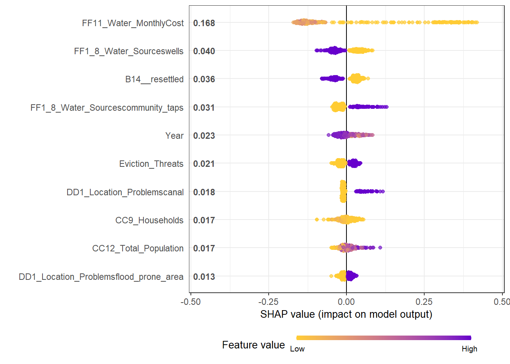
Dependence plot for each feature
-
Here we choose to show top 6 features ranked by mean|SHAP|
data_long <- shap.prep(mod1, X_train = X_train)
shap_values <- shap.values(mod1, X_train)
features_ranked <- names(shap_values$mean_shap_score)[1:4]
fig_list <- lapply(features_ranked, shap.plot.dependence, data_long = data_long)
gridExtra::grid.arrange(grobs = fig_list, ncol = 2)
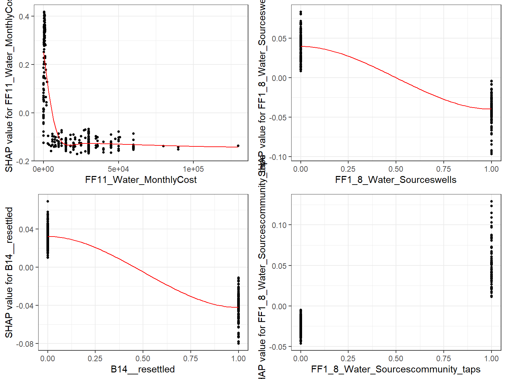
-
If Use the built-in
xgb.shap.plotfunction
xgboost::xgb.plot.shap(data = X_train, model = mod1, top_n = 4, n_col = 2)
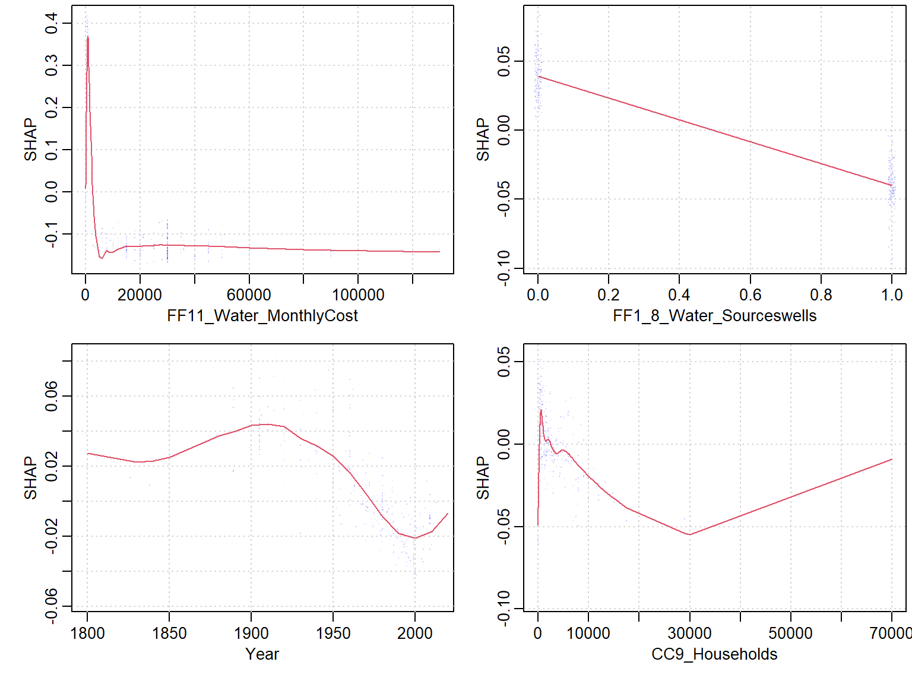
Force plot
Since there are so many features in this dataset, we pick only top 6 and merge the rest.
-
Use
geom_colto show features each contributing to push the model output from the base value (the average model output) to the model output.
-
Have tried geom_area but dones’t work very well due to gaps in the plot caused by fluctuation of positive and negative values.
- apply the order of clustering to group observations under similar influences closer.
force_plot_data <- shap.prep.stack.data(shap_contrib = shap_values$shap_score, top_n = 5, n_groups = 4)
shap.plot.force_plot(force_plot_data)
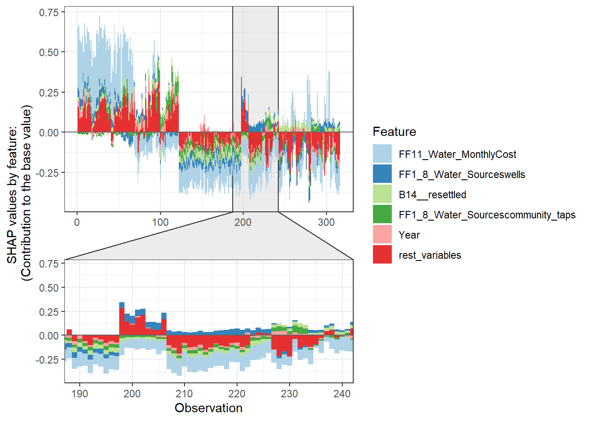
Stack plot by clustering groups
shap.plot.force_plot_bygroup(force_plot_data)
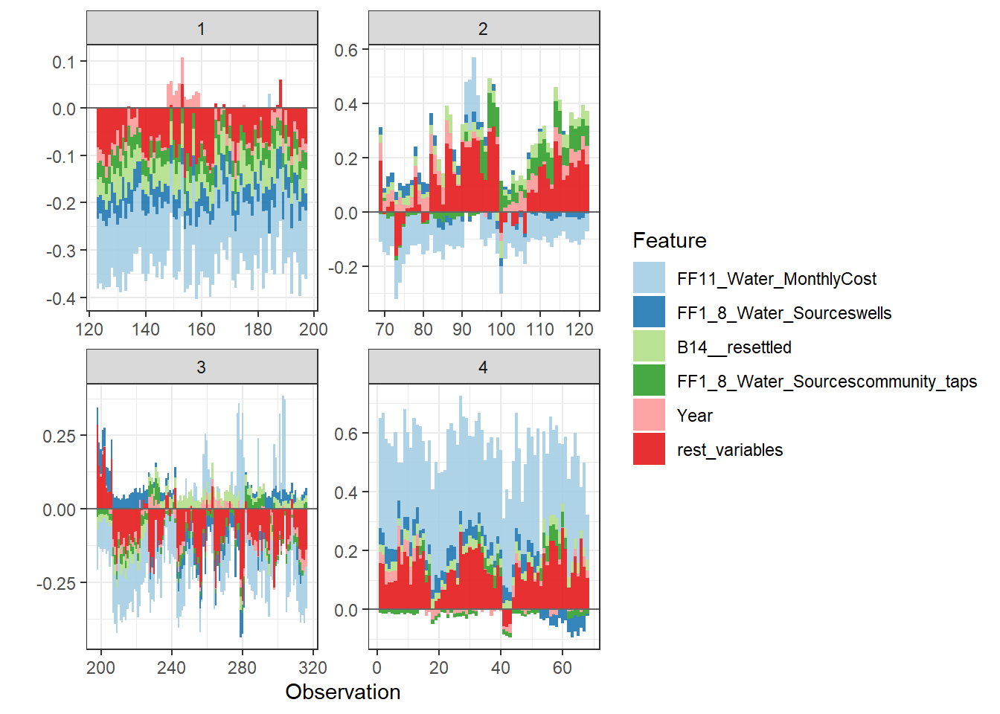